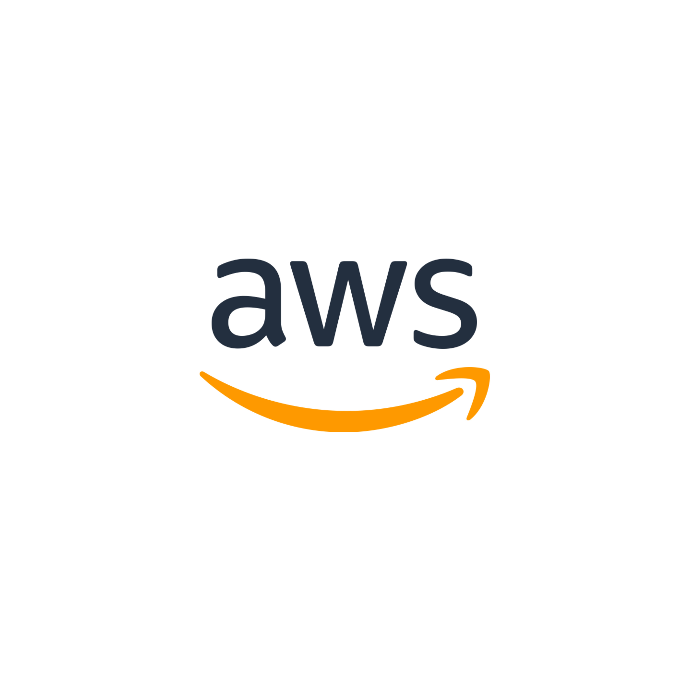

Cloud Computing 개념 정리
Cloud Computing 이란?
클라우드 컴퓨팅은 컴퓨팅 리소스를 인터넷을 통해 서비스로 사용할 수 있는 주문형 서비스. 기업에서 직접 리소스를 조달하거나 구성, 관리할 필요가 없으며 사용한 만큼만 비용을 지불쉽게 말하면, 클라우드 컴퓨팅은 인터넷("클라우드")을 통해 서버, 스토리지, 데이터베이스, 네트워킹, 소프트웨어, 분석, 인텔리전스 등의 컴퓨팅 서비스를 제공하는 것.
장단점
- 경제성 : 하드웨어 구매 필요가 없으므로 경제성
- 자본 비용을 가변 비용으로 대체 : 사용한 양만 지불
- 유연성 : 리소스 필요할 때, 필요한 만큼만 확장/축소
- 빠른 구축 속도
- 손쉬운 글로벌 서비스
- 강력한 보안 : 따로 보안을 신경 쓸 필요 없다.
- 생각보다 비싼 비용
- 점점 커지는 클라우드 의존성
- 데이터 보관의 불안함
대표적인 Cloud Computing Platform

AWS(Amazon Web Services)는 아마존닷컴이 제공하는 클라우드 컴퓨팅 플랫폼으로, 가상 컴퓨팅, 스토리지, 데이터베이스, 네트워킹, 머신 러닝, 보안 등
다양한
서비스를 제공하여 기업과 개발자가 확장 가능하고 안정적인 IT 인프라를 구축하고 운영할 수 있도록 합니다.
AWS는 필요에 따라 리소스를 동적으로 조정하고 서비스를 유연하게 이용할 수 있는 플랫폼을 제공합니다.
Cloud Service Model
(Infrastructure as a Service - 인프라스트럭처 서비스)
- 가장 기본적인 서비스 모델, 가상화된 컴퓨팅 리소스를 제공
- 사용자 : 가상 머신, 스토리지 등의 인프라를 필요에 따라 사용
(가상 서버를 생성하거나 스토리지 공간을 확보)
(Platform as a Service - 플랫폼 서비스)
- 애플리케이션 개발 및 배포를 위한 플랫폼을 제공
- 사용자: 소프트웨어 개발에 집중하고, 플랫폼은 개발, 테스트,
배포, 관리를 위한 도구 및 서비스를 제공
(데이터베이스, 개발 프레임워크, 웹 서버 등의 플랫폼을 사용)
(Software as a Service - 소프트웨어 서비스)
- 최종 사용자에게 소프트웨어 애플리케이션을 제공
- 사용자: 애플리케이션을 설치하거나 유지관리할 필요 없이
웹 브라우저를 통해 소프트웨어를 이용
(이메일 서비스, 문서 편집, 프로젝트 관리 등)
Cloud Computing 기술
가상화 기술
- 하드웨어 리소스를 논리적으로 다룰 수 있게 만드는 메커니즘
- 컴퓨터 하나를 여러개처럼 만드는 것
- 물리적으로 하나의 컴퓨터지만 여러명이 사용하고 싶은대로 사용
- 하나의 물리 서버 → 여러 개의 서버 환경 구축
- 여러대의 물리적 서버 → 하나의 서버 환경으로 통합
- 시스템 구성의 유연하고 빠른 변경 및 자동 리소스 추가
- 서버 가상화, 네트워크 가상화, 스토리지 가상화
서버 가상화 기술
- 하나의 물리적 서버 리소스에 여러개의 서버 환경 할당, 각각의 환경에서 OS와 애플리케이션을 실행할 수 있게 함
- 컴퓨터 안에 여러개의 컴퓨터를 만들어 여러 OS를 사용할 수 있게 함
- 서버 리소스를 최대한 활용
- 공간 절약, 비용 절감
- 각각의 가상 서버는 독립 상태
- 서버 가상화 기술의 종류
- 하이퍼바이저 형 : 하나의 물리 서버 하드웨어 > 하이퍼 바이저라는 가상화 소프트웨어 > guest OS
- 호스트 OS 형 : 컨테이너 형 : 하나의 OS 환경에서 애플리케이션을 실행하기 위한 영역을 여러개로 나누어 사용
- 컨테이너 형
- 네트워크를 물리적 구성에 얽매이지 않게 하는 유연성 필요
분산처리 기술
- 대량의 빅데이터를 여러 서버에 분산하여 동시에 병렬로 빠르게 효율적으로 처리하는 기술
- 클러스터링 : 여러 개의 서버를 겹합하여 하나의 컴퓨터로 보이게 함
- Apache Spark
데이터베이스 기술
- ROB (relational database)
- NoSQL (Not only SQL) : 대량의 데이터를 분산시켜 고속으로 처리하는 분산 데이터베이스
스토리지 기술
- Block Storage
- 일정한 크기의 block으로 나눈 logical volume을 block 단위로 액세스
- 빠른 데이터 전송 가능
- 데이터베이스 서버
- File Storage
- 파일 단위로 저장
- 파일 공유 기능
- 파일 서버
- Object Storage
- 데이터를 객체 단위로 처리
- OS, file system에 독립적으로 데이터 저장
- HTTP 프로토콜 기반의 REST 형식의 API 사용